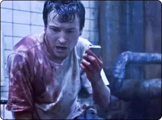
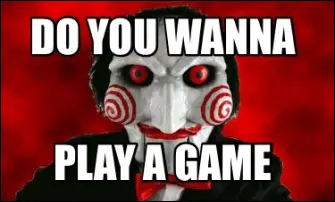
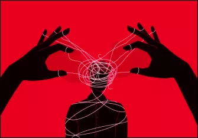

"Nous allons jouer à un jeu" : L'Énigme Mortelle de Jigsaw
L'une des phrases emblématiques du film, prononcée par le personnage principal, Jigsaw, incarné par Tobin Bell, a
instantanément captivé l'attention du public : "Nous allons jouer à un jeu." Elle a marqué le début de l'horreur
psychologique et du sous-genre du "torture porn". Mais qu'est-ce qui rend cette réplique si mémorable et effrayante ?
UNE PHRASE SOURCE DE FRISSONS
Premièrement, la phrase elle-même est dite avec un calme sinistre par Jigsaw, un tueur en série notoire qui place ses
victimes dans des situations de vie ou de mort. Lorsque les personnages du film entendent ces mots, ils savent qu'ils
sont en grave danger, et cela crée une tension palpable pour le public.

Adam, découvrant son sort en même temps que le spectateur
UN ÉLÉMENT CENTRAL DE LA FRANCHISE
Ensuite, la phrase est souvent suivie d'une explication de la tâche macabre à accomplir pour échapper à la mort
imminente. Ces jeux mortels sont ingénieusement conçus pour tester la moralité et la survie des victimes. Les
spectateurs sont ainsi pris au piège de l'intrigue, anticipant avec anxiété les choix difficiles que les personnages
vont devoir faire. Cette réplique est devenue un élément central de la mythologie "Saw". Elle est répétée tout au long
de la franchise, ce qui la rend encore plus inquiétante à chaque apparition.

Meme de Jigsaw avec la réplique
Elle est devenue l'emblème de Jigsaw, évoquant l'horreur et l'inévitable. Elle a également inspiré de nombreux mèmes,
parodies et références dans la culture populaire, témoignant de son impact durable.
UNE DIMENSION PSYCHOLOGIQUE
En fin de compte, cette phrase emblématique incarne parfaitement l'essence de "Saw" en tant que film d'horreur
intelligent et manipulateur. Elle nous rappelle que le véritable effroi réside parfois dans la psyché humaine et les
choix impossibles, plutôt que dans les monstres surnaturels.

Illustration représentant la manipulation
"Nous allons jouer à un jeu" reste un cri de guerre terrifiant pour les fans du genre, rappelant que dans l'univers de
Jigsaw, personne n'est à l'abri de ses sombres énigmes mortelles.